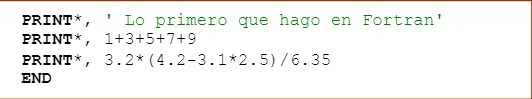
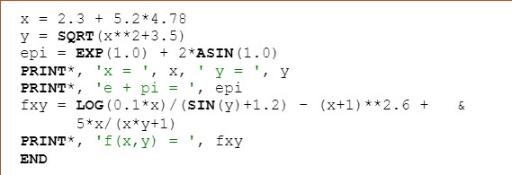
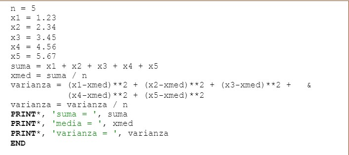

CALCULADORA ELEMENTAL
La sentencia PRINT permite visualizar valores en pantalla. PRINT* indica ‘sin formato específico’ y los valores se visualizarán en función de su tipo, magnitud, sistema operativo y compilador utilizado. Los caracteres entre apóstrofos se llaman literales. La última sentencia de un programa debe ser END.
Operaciones elementales. Sentencia PRINT 
Pueden utilizarse variables escalares para contener valores numéricos y combinarse para formar expresiones. Existen numerosas funciones matemáticas intrínsecas. La sentencia PRINT también permite visualizar valores de variables y expresiones. Una sentencia larga puede codificarse en varias líneas. (Para indicar que una línea continúa en la siguiente se pone & al final de ella)
Variables escalares. Funciones intrínsecas 
CALCULOS ESTADÍSTICOS SIMPLES
Variables escalares
